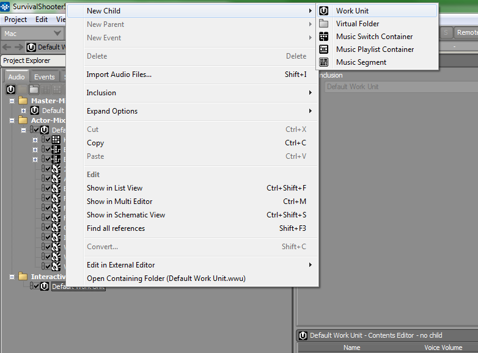

Lecture 12 - Layered - Vertical Music
Wwise Layered Music
First we need to create a Music Work Unity in our Interactive Music Hierarchy.
Right-Click on the Default Work Unit -> New Child -> Work Unit.
Name the new Work Unit - Music.
Go Into the Interactive Music folder I gave you. Drag the Stage Folder onto the Music Work Unit.
On the folder change the Object Type / Action from Virtual Folder to Music Segment
Go to the Layouts tab and change to the Interactive Music Layout.
Change the tempo of the Music Segment to 136 Beats per Minute. This is the Tempo of all our Music files.
Right-Click on the timeline and change the timeline to Bars and Beats
Ctrl+Left-Click and move the Start Cue (Green Flag) to the start of our Music.
Left-Click to move the End Cue (Red Flag) to the end of the Music on bar 17.
Right-Click on our Music Segment Stage->New Parent-> Music Playlist Container
We need to set the tempo for our Music Playlist Container to 136bpm.
Otherwise, it will overwrite our Tempo on the Music Segement
Drag our Stage Music Segment onto the Sequence Continuous icon in the Music Playlist Container
On the Sequence Continuous click the down arrow to set the Loop Count to Infinite.
Click on the NormalStage Music Playlist Container and then Pin the Transport Control

Left-Click on the Stage Music Segment to give it focus.
We can solo tracks in our Music Segment to hear the individual Music Tracks.
This is useful to preview and make a plan for a music content.
You can hit the Solo Reset button to clear all your solo tracks.
Helpful to quickly get back to the default state.
Find the Orchestral Percussion track and Right-Click on it. From the context
menu select Random Step
Notice the Blue Bar that has appeared on the track we set to Random Step.
Right-Click on the Random Step track and add a Sub-Track.
Make sure you do it on the Orchestral Percussion track. This photo doesn't show it clearly.
Drag the Percussion Hits Track onto the newly created Sub-Track
Now that we have moved our Percussion Hits to the Sub-Track we can delete
the track that Percussion Hits formerly occupied. Clean up your Mess!
You can lower chance of a certain track playing by adding empty Sub-Tracks.
Also NOT playing a part can add even more variety to our Layered Music.
Now lets Right-Click on our Piano Solo track and created a Sequence Step
This will make a green bar on the right side of the track.
Let's add a Sub-Track to our Sequence Step
Let's Drag our Lead Cello track to the empty Sub-Track we just created.
Make sure you delete the track that Lead Cello previously occupied.
Like any other Sound we need to create and Event for our Music Playlist.
We also need to create a Sound Bank for our Music and add the Event to that bank.
Unity Script
Let's add our PostEvent call to the WaveManager.cs script.
Let's add our Function Call StartGameMusic() to the Start() Function
in the WaveManager. This is going to be highlighted until we finish.
On a blank line under our StartWaveManager() function lets add our StartGameMusic()
function definition

Survival Shooter Requirements